|
<< Click to Display Table of Contents >> График работы врачей. Редактор графика дня врачебного приёма |
  
|
|
<< Click to Display Table of Contents >> График работы врачей. Редактор графика дня врачебного приёма |
|
☝На форме используются типовые элементы, подробно описанные в разделе "Основные управляющие элементы". Для наилучшего понимания их работы в данном контексте, необходимо предварительно ознакомиться с их описанием.
Переход на форму происходит после одинарного клика левой кнопкой мыши на ячейку дня в основной форме. Основная область редактора состоит из блоков: шапка, Виды работ, Талоны.
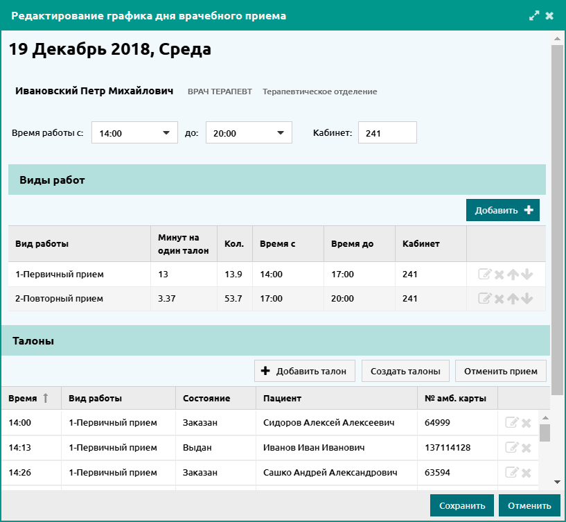
Шапка формы
Блок содержит такую информацию как: дата, день недели, ФИО врача, специальность, отделение. Ниже - поля ввода:
•Время работы с-по. Для ввода времени начала и окончания рабочей смены.
•Кабинет. Номер кабинета врача, по умолчанию берётся из справочника "Врачи", но можно изменить на другой.
Виды работ
Блок содержит таблицу, в которой представлены: виды работ, норма на один талон в минутах, расчётное количество талонов, период времени для данного вида работы, кабинет. В конце каждой записи таблицы расположены управляющие кнопки редактирования  , удаления
, удаления  , изменения позиции записи .
, изменения позиции записи .
☝При изменении позиции вида работы, периоды времени изменяются автоматически, но длительность видов работ сохраняется. Например, период первичного приёма с 14:00 до 18:00 (длительность 4 часа), период повторного приёма с 18:00 до 20:00 (длительность 2 часа). При изменении позиций этих видов работ: повторный становится первым, первичный - вторым, - период повторного становится с 14:00 до 16:00, первичного - с 16:00 до 20:00.
Каждая запись редактируется с помощью редактора. Редактор вызывается по нажатию на кнопку  . Для добавления новой записи служит кнопка Добавить.
. Для добавления новой записи служит кнопка Добавить.
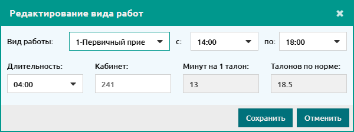
Редактор содержит элементы:
•Вид работы. Выпадающий список с видами работ из справочника "Виды работ".
•с, по. Период времени для данного вида работы. Выпадающий список, можно вводить вручную. Время может быть указано только в пределах времени рабочей смены, иначе программа выдаст предупреждающее сообщение
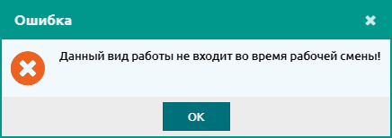
•Длительность. Выбирается из списка или вводится вручную. По умолчанию заполняется автоматически после указания периода для вида работы. Но работает и в обратном направлении: при изменении значения длительности конечная граница периода данного вида работы автоматически будет изменена с учетом этого значения.
•Кабинет. По умолчания подставляется из справочника "Врачи". При необходимости можно указать другой, если какой-либо вид работ будет осуществляться в кабинете, отличном от указанного в справочнике.
•Минут на один талон. Нередактируемое информационное поле. Значение подставляется из справочника "Специальности" для данной специальности и соответствующего вида работ.
•Талонов по норме. Нередактируемое информационное поле. Рассчитывается автоматически, исходя из длительности и нормы минут на один талон.
Талоны
Блок содержит таблицу для отображения талонов, над таблицей - функциональные кнопки. При добавлении графика (работа редактора в режиме добавления) таблица пустая. Для создания талонов, после корректного добавления видов работ, нужно нажать на кнопку Создать талоны. Программа выдаст подтверждающее сообщение
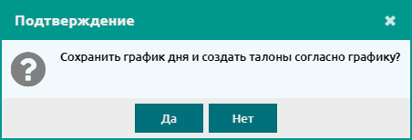
После выбора Да график будет сохранён и генерация талонов выполнена.
☝Нельзя выполнять перегенерацию талонов, если уже есть заказанные, выданные или отменённые талоны. При попытке создать талоны программа выдаст сообщение об ошибке
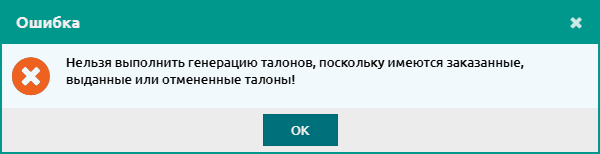
После генерации в таблице будут доступны талоны, которые характеризуются временем, видами работ, состоянием. Кроме того для заказанных/выданных талонов отображаются ФИО пациентов и номера их амбулаторных карт. В конце каждой записи есть стандартные кнопки редактирования  и удаления
и удаления  . При клике на
. При клике на  открывается редактор талона, в котором можно изменить время талона и вид работы. Этот же редактор вызывается при клике на кнопку Добавить талон, что позволяет добавить талоны сверх нормы.
открывается редактор талона, в котором можно изменить время талона и вид работы. Этот же редактор вызывается при клике на кнопку Добавить талон, что позволяет добавить талоны сверх нормы.
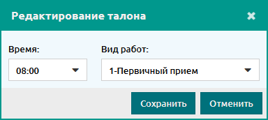
☝Нельзя удалить заказанные/выданные талоны. При попытке удаления таких талонов программа выдаст сообщение об ошибке
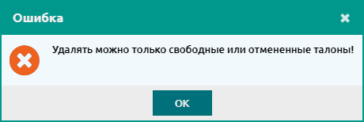
Для отмены приёма служит кнопка Отменить приём. При клике открывается форма отмены приёма, где в поле Причина из списка выбирается причина отмены, а в полях с и по указывается период времени, когда отмена начинает действовать.
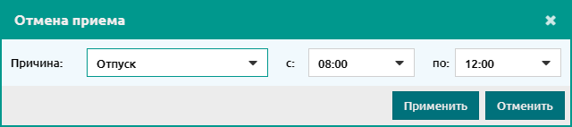
После нажатия на Применить талоны, попавшие в период отмены отменятся. При этом те виды работ, у которых время пересекается с временем периода отмены, обрежутся на время отмены, а те виды работ, которые "укладываются" в него целиком - просто удалятся. На основной форме записи на приём такие отменённые талоны будут отмечены видом работ, указывающим на причину отмены.
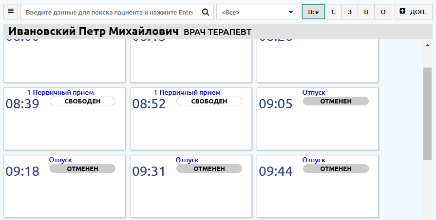
Если время вида работы полностью вошло во время отмены, то в таблице с талонами время и вид работы таких талонов будут выделены синим цветом, а при наведении указателем мыши на иконку будет выведена подсказка "На данный талон не создан вид работы!". Другими словами это означает, что данные талоны были созданы на вид работ, которого сейчас нет (был отменён).
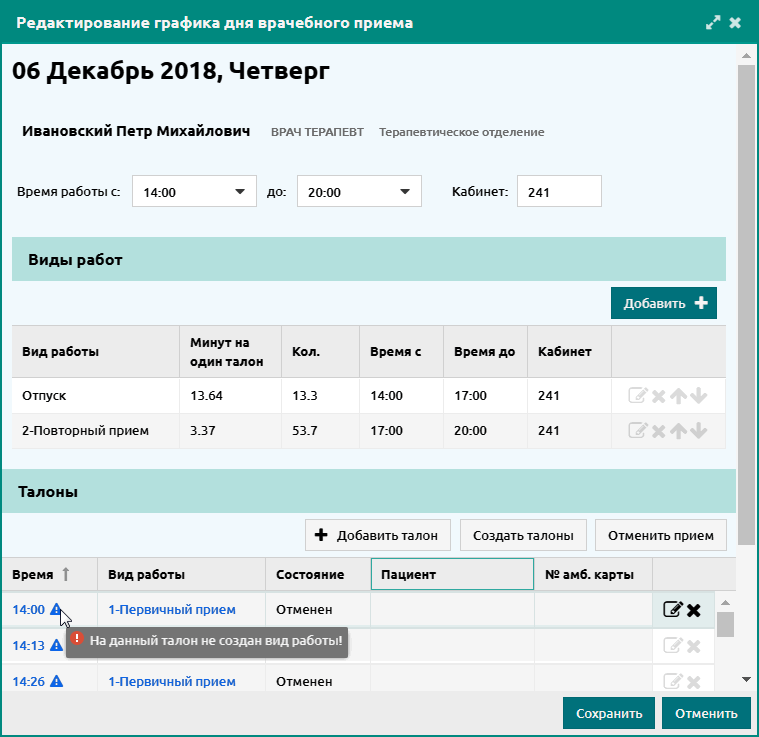
Если после сохранения графика уменьшить время рабочей смены, то пересекающийся с этим диапазоном времени вид работы подсветится красным цветом, при наведении указателя мыши на иконку всплывет подсказка "Вид работ не входит в диапазон рабочего времени!". Если есть талоны, то подсветятся и они (время и вид работы). При наведении указателя мыши на иконку всплывет подсказка "Талон не входит в диапазон рабочего времени!"
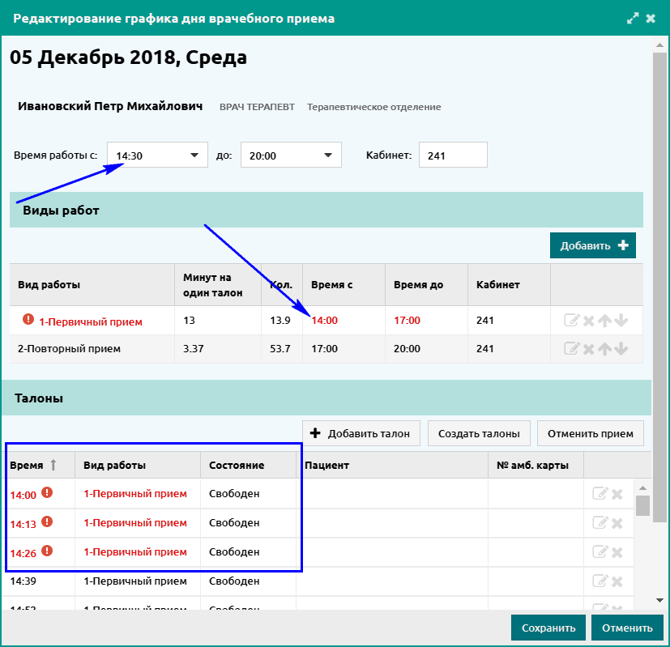
После нажатия на Сохранить программа выдаст подтверждающее сообщение
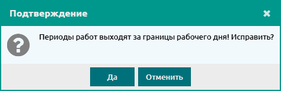
При выборе Да программа исправит время пересекающихся видов работ и, если талонов еще нет, сохранит график. При выборе Отменить действие будет прервано. Если же в графике уже есть талоны и они свободные или отменённые, то после первого сообщения будет выдано другое
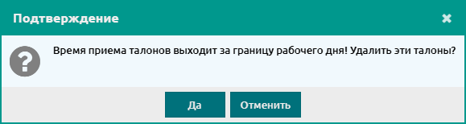
При выборе Да талоны, время которых выходит за границы рабочего дня, будут удалены, редактор графика закрыт. При выборе Отменить действие будет прервано. Если в графике есть заказанные/выданные талоны, то удаления не произойдёт: программа выдаст сообщение об ошибке, как и при ручном удалении талонов по кнопке  .
.